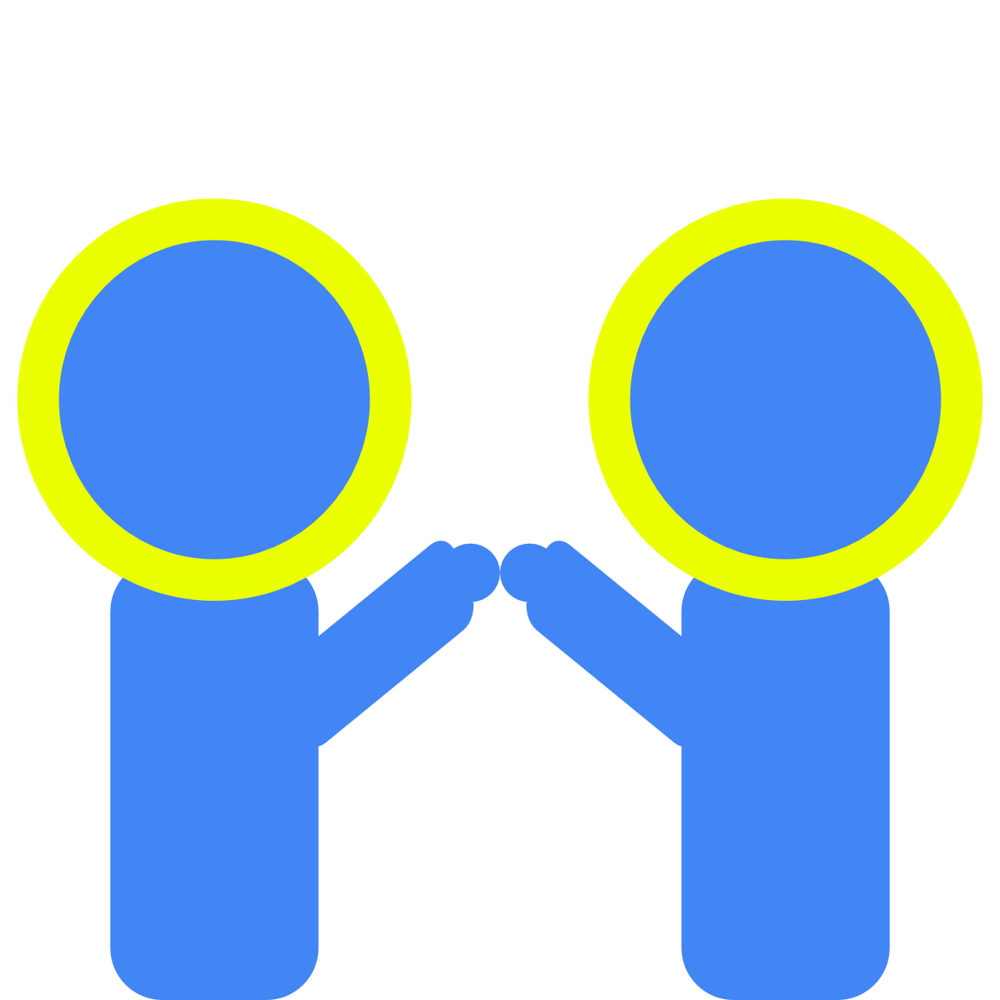

Hi, I'm AJ Carter
Experience & Skills
Web Development Experience
Last summer, I interned at Northrop Grumman as a Cyber Systems Engineer. My work was primarily focused on building and refining a UI using Django, HTML/CSS, and JavaScript.
Skills
- HTML/CSS/JavaScript
- Django
- API experience
- Web accessibility

UX Experience
I'm passionate about creating products with the user at the center
Skills
- Usability evaluations
- Card sorting
- Heuristic evaluations
- Creating surveys and data analysis
- Writing research report
- Writing documentation

Research Experience
I'm interested in learning about how technology and social media can be leveraged to better support individuals through major life events.
Skills
- Qualitative coding
- Data analysis
- Currently on the Life Transitions and Social Media Project
- Co-authored on The Language of LGBTQ+ Minority Stress Experiences on Social Media

Who am I?
I’m an enthusiastic debugger
I really enjoy the process of discovering, hunting down, and solving bugs.
In Practice
- Using resources and tools to quickly identify and work through bugs
- Teaching others debugging and troubleshooting skills
- Being an Instructor Assistant for Data Programming (SI 206), I debug and walk through code daily

I'm a quick & motivated learner
I can pick up skills fast. I'm good at identifying gaps in my knowledge and filling the gaps quickly.
In Practice
- I learned Robot Framework and I created automated testing scripts within a week while at Northrop Grumman
- I picked up Django last summer and I built my first web app
- I self-taught most of my HTML/CSS skills

I'm a people person
I’m passionate about understanding people, their stories, and how technology can use these stories to build a better future.
In Practice
- Through my Anthropology minor, I am skilled at thinking about people and their identities
- As Resident Advisor, I use restorative practices to build community and to understand the needs of others
- I am driven by projects and technologies that directly impact people

Designs